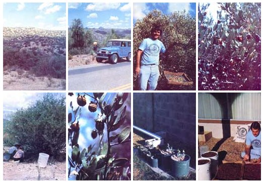

No one really knows how long the native peoples of the U.S. Southwest have been harvesting and using the nut of the jojoba (ho-ho-be) shrub. As early as 1769, however, the famous Spanish missionary Junipero Serra reported that he had seen California Indians cooking with jojoba oil and using the fluid as a healing agent on wounds.
And there the matter rested until 1822, when an H.F. Link attempted to classify the jojoba plant. Unfortunately for us all, though, Mr. Link foolishly mixed his jojoba specimens (collected from the Sonora Desert) ... with other plants gathered on a later field trip to China. This has since created two problems: [1] It caused a number of other botanists to waste a great deal of time, energy, and money fruitlessly searching that Asiatic country for the plant, and [2] it leaves the jojoba-a bona fide native of North America-saddled to this day with the misleading scientific name of Sim mondsia chinensis.
Still, it's hard to keep a good plant (even a misnamed one) down. And the hardy jojoba shrub-which can not only thrive in the kind of hot, dry deserts that kill most growing things, but produce an extremely valuable oil while doing it- is, indeed, a very good plant. Good enough, at any rate, to encourage several government agencies to attempt to introduce the jojoba to semi-arid, povertystricken northern Africa over the years. These efforts all failed, however, and the plant once again fell into obscurity.
Suddenly World War II-with its hotly contested struggles for control of both the planet's land masses and sea laneschanged all that. The increasingly sophisticated war machines thrown into the fray by nations on both sides of the conflict consumed absolutely frightening quantities of highpressure lubricants ... and that caused problems for everyone.
"High-pressure lubricants", you see, are not just ordinary cans of plants, animals, or petroleum-derived oil with a few extra additives thrown in. Not the really good ones. Rather, they're very special liquid waxes made up of nonglyceride esters (instead of the more common triglycerides) ... and each of these nonglyceride esters is almost entirely composed of straight-chain acids and alcohols, each of which has 20 or 22 carbon atoms and 1 unsaturated bond.
This particular wax-ester structure is not at all easy to synthesize in commercial quantities and there seem to be two-and only two-natural sources of the chemical compound: [1] sperm whales, and [2] the-you guessed it! -jojoba shrub. And with naval battles, lurking submarines, and spy ships and boats of all descriptions cluttering up the globe's oceans and sharply reducing everyone's whaling activities ... it was only natural that Allied Forces (which owned a near-monopoly on the plant) began experimenting with the harvest of the wild jojoba and the extraction of its oil.
The extraction part wasn't too difficult ... but the harvesting of the wild jojoba's oil-laden nuts was something else again. The shrubs frequently grow ten feet high and ten feet in diameter ... and the whole mass is often-in the words of The Jojoba Research Foundation-"a mass of tangled woody branches".
Picking the plant's nuts, in other words, can be a decidedly labor-intensive proposition. And once the war was over, most of us seemed to lose interest in doing anything so menial as hand-gathering the nuts from a shrub somewhere out in the hot, dry desert for crying out loud ... especially when it was so much easier (and a lot more macho!) to just harpoon a few whales and render the special oil we needed out of them.
The only trouble was-as the late-40's turned into the 50's and then the 60's and, finally, the early-70's, and the world's weapons and tractors and earth movers and other machines became ever bigger, more numerous, and more sophisticated- everyone's thirst for high-pressure lubricants became more and more insatiable as time went on. And those "few" whales that we started out to kill soon threatened to become merely all the sperm whales in the sea.
And thus it is that now-with his back against the wall and virtually no where else to turn-homo sapiens has finally "discovered" the patient jojoba plant and cleverly surmised that it might be a darned good idea if he (in his infinite wisdom) explored the possibilities of cultivating the shrub for its oil-rich nuts. (When all else fails, do what you obviously shoulda done in the f irst place!)
And those nuts are rich in oil. Most jojoba seeds test out at between 45 to 60 percent ... with the average nut running close to 50 percent clear, unsaturated, resin- and tar- and alkaloid- and glyceride-free oil. Furthermore, the fluid has a high viscosity index, high flash and fire points, high dielectric constant, and a pleasant smell ... and seems to be so stable and resistant to oxidation that it can be stored for years-decades!-without ever becoming rancid.
Jojoba oil has even more desirable characteristics ... far too many, in fact, to list here. Suffice it to say that the fluid is an ideal (the only ideal) substitute for sperm oil when it comes to the highly specialized lubricating products we've already mentioned. It also appears to be the only readily available source of straight-chain mono- unsaturated alcohols and acids. This and other unique properties of the oil seem destined to make the jojoba- now that we've finally begun to give it serious considerationextremely important to our food, leather, paint, adhesives, cleaning and polishing, cosmetics, health, insulation, rubber, textile, and other industries in the future. Research has even shown that one derivative of the jojoba seed- sim mondsin- tends to act as an appetite suppressant in mono-gastric (singlestomach) animals. No one yet knows why ... but scientists are already speculating about a highprotein, entirely natural "diet" pill made from the jojoba nut!
While all this exploration of the jojoba's useful properties has been going on, equally valuableor, perhaps, even more important-work has been taking place with the cultivation of the shrub.
Pilot tests at the University of California at Riverside, for instance, have demonstrated that the jojoba can be trained up into a tree-like form when the young plant is wrapped with nylon mesh. This permits the ripening nuts to be caught in nets and/or harvested with mechanical pickers something like the equipment used in almond orchards. This, of course, very neatly does away with the need for the menial, laborintensive hand-gathering of the seeds that our culture finds so distasteful.
Experiments in Israel have also shown that the tenacious jojoba can grow and produce nuts in the hostile Negev Desert...even when irrigated only with lightly filtered and extremely salty Dead Sea water! Other pilot projects in the U.S. Southwest, northern Africa, and additional and sections of the world indicate that improved varieties of the plant can be bred which will produce several times the average five pounds of clean, dry seed that a wild female jojoba shrub bears annually.
The bottom line of all these experiments with the breeding and cultivation of jojoba on plantations already pencils in as a very optimistic conclusion: The shurb can not only [1] save the sperm whale, and [2] play a major role in keeping our industrialized society from starving and strangling itself and the planet to death ... it can also create a new and highly profitable way for the inhabitants of poor, hot, and countries [3] to reclaim "useless" deserts while [4] becoming self-supporting and [5] contributing an extremely valuable commodity to the markets of the world.
Start-up costs of a jojoba plantation are now estimated at from $1,500 to $3,000 an acre and maintenance expenses currently average about $100 per acre per year. That may sound like a sizable investment ... but the shrub begins to bear in only five years, improved and pruned varieties can yield from 1,000 to 2,000 pounds of oil per acre, and the plant will continue to bear for a minimum of 100 and as long as 200 years.
Furthermore, when you know that two of the refined substances (sperm oil and carnauba wax, both in increasingly short supply) which jojoba oil so efficiently replaces currently sell for 40c and $2.00 a pound, respectively, you begin to understand what a boon this plant can be. Especially when it grows so well on hot, and land that will support no other major crop ... with a minimum amount of irrigation, and no fertilizer at all.
That's almost like getting something for nothing ... and a very important and valuable "something" at that. Why, the whole idea sounds too good to be true. Surely-although there's no arguing with the analysis of the jojoba's oil or the results of experiments with its cultivationthere must be a "fly in the ointment" someplace, What about the potential market for this "miracle" oil? Yeah, that's it! What'll happen to the price of the jojoba if too many of the world's and nations suddenly start raising it?
There doesn't really seem to be much chance of ever saturating the market. The Indians of the U.S. Southwest and western Mexico who now harvest nuts from the scattered patches of wild jojoba in their areas are a long, long way from satisfying the demand for the plant's oil. Even the 1,000-plus acres of cultivated jojoba plantations that have already been planted in anticipation of tomorrow's demand for the oil are a mere drop in the bucket to the over 100,000 acres of cultured jojobas that the National Academy of Sciences estimates the industrialized world could use right now.
And even that brave call for 100,000 acres of the plant pales into insignificance when you begin to realize what the Consejo Internacional Sobre Jojoba (International Conference on Jojoba and Its Uses) projects as the ultimate role this unusual shrub can play in our society.
"Jojoba can not only replace the endangered sperm whale and its banned oil as the major source of extreme -pressure lubricants, cosmetics, and other such specialized industrial commodities. This efficient, renewable converter of solar energy into oil can supplement-and someday may even largely replace-the steadily dwindling reserves of underground petroleum on which modern society so utterly depends for so many of its thermal and thermomechanical needs."
Think about that! Think about deserts reclaimed into neat plantations of trellis-grown shrubs ... shrubs that supply us with everything from fuel to diet pills. Think about impoverished, arid, Third World nations being ablefor a change-to earn enough foreign exchange to feed, clothe, and otherwise provide for their peoples. Think about saving the whales and other forms of life that are increasingly endangered by our fossil fuel economy. Think about all the things that the patient jojoba has been waiting so long to do for us.
There's no question about it: This still-little-known and largely unsung scrubby little desert tree just may hold the key to this planet's future. The meek may yet inherit the earth.
for more jojoba information:
Consejo Internacional Sobre Jojoba, 1815 N. University St., Peoria, 111. 61604: This seems to be the oldest jojoba organization around and CISJ's co-director, Thomas K. Miwa, is highly respected in the field. As long as the supply lasts, CISJ will send you a packet of 10 articles about jojoba for $1.00.
The Jojoba Center, P.O. Box 763, Carpenteria, Calif. 93013: the service arm of the newly founded Jojoba Research Foundation. For $2.00 the center will send you a packet of information and a few jojoba seeds.
Printing and Publishing Office, National Academy of Sciences, 2101 Constitution Ave. N.W., Washington, D.C. 20418, The academy offers a very definitive, 32-page book about the jojoba plant, its cultivation, and its market potential for $3.75. Ask for Products From Jojoba: A Promising New Crop For Arid Lands. Another book, Jojoba.- Feasibility of Cultivation on Indian Reservations in the Sonoran Desert Region, is also available for$6.25. a
"Jojoba, jojoba, jojoba ... that's all you talk about," says my wife. And she's right too! I can't help it. Because I know what the jojoba plant means to the sperm whale, the whole balance of nature, and all the peoples of the world!
I didn't always know, of course. It was on ly in 1973 that I stumbled onto an Arizona Republic article by Maggie Wilson that explained how the endangered sperm whale could be saved by the oil from this desert shrub. And, although I was immediately in terested in lending a hand to the whales...I have to be honest and confess that what really caught my eye in the piece was the part that said $50 would be paid for each and every two-inch-long jojoba seed that was brought in.
Wow! My home here in Mesa, Arizona just happens to be smack in the middle of the plant's biggest native area. And-since I'm a nature lover, prospector, and at least a for tune seeker-I wasted no time in rushing right out to fill my pockets with those two inch-long seeds.
Well, I didn't find any (although I did find some one-inchers weighing two grams ... which is far above average). But while I was looking I learned that the jojoba is a very, very unique plant. Not only can it save the sperm whale ... but it can bring new life to and lands, provide millions of jobs exactly where people need them the most in all parts of the world, and maybe even help get the modern world off its petroleum addiction and onto a saner, renewable-resource way of life.
And it can do all of this while turning bar ren desert land into what can only be called liquid solar energy farms. Wow! Before I knew what was happening, I had forgotten all about a few piddling little $50 seeds. I wanted to become part of the inevitable Jojoba Revolution! I began to write letters, talk to people, and take everyone I could haul out into the desert to see jojoba plants in their natural habitat.
One thing led to another and I was soon in touch with Dr. Thomas K. Miwa, co-director for the U.S. Consejo Internacional Sobre Jojoba and Byrd Baker of the Men dicino Whale War. I even received a certificate from the Chief Jojoba Nut attesting to the fact that I was an active member of the Jojoba Witnesses! Next I was invited to give a talk to the Society for New Earth and to participate in Earth Week at Arizona State University ... both great honors.
By this time, of course, I was also doing far more than meeting people and speaking at gatherings. I was spending a great deal of my time out in the deserts and mountains, sweating in 110* heat, stepping on rattle snakes, sticking my arms into wasp nests hidden in jojoba bushes, and hand-hulling (I didn't have a machine) 500 pounds of the seeds at a time.
I was finding markets for those seeds too. Very rewarding ones ... and not just in money! Jojoba plantations have now been started in Texas, California, South Africa, and Australia ... and I supplied some of those seeds! In seven to ten years, each acre of the trees will be producing 2,000 to 5,000 pounds of jojoba oil a year. That should save about two sperm whales per year per acre, and I had a part in it. That's what I've been working for!
And that's what I'm still working for. I've now established Janca's Jojoba Oil & Seed Company (1407 S. Date St., Mesa, Ariz. 85202) to [A] help save the whales-especially sperm whales-from extinction and [B] help develop jojoba as a renewable resource energy crop. Our plan is to [1] interest people everywhere in the world in the plight of the sperm whales, [2] let people everywhere know that jojoba oil is an economical alternative to sperm whale oil, [3] build up a dependable supply of improved strains of jojoba seeds with which we can bridge the gap from strictly wild harvests to plantation production of the nuts, and [4] establish a jojoba plantation of our own.
We already have more orders for the seeds than we can possibly fill ... and I'm currently paying $2.00 a pound for clean dry jojoba seeds and 75 cents to $1.00 a pound for seeds that have been only dried. I hope some of MOTHER's readers will start sending them to me!
I'm anxious to help anyone who's interested get started growing jojoba too... not just in big plantations, but also on a smaller scale. Jojoba seems perfect for homesteads, small farms, even front and back yards. It's a beautiful ornamental evergreen that never gets really big and I'm still determined to learn how well it'll grow in other kinds of soil and under many different climatic conditions. If you'd like to experiment with the shrub in your own area (wherever that might be) just send me $1.35 and I'll mail you the story of jojoba and a packet of seeds that you can plant. And then be sure and let me know how they do!
I'd love to get everyone-or, at least, a very great many people all over the worldgrowing jojoba. Research has shown that the shrub can produce a crop with a cash return five times larger per acre than cotton ... and do it for 100 to 200 years with very little annual maintenance. This is bigger than all the governments of the world put together! Jojoba is for the people of the earth... the people, and all other living things.
So what are you waiting for? Let's get started ... NOW! Order some seeds and start learning how well they grow in your area. Get in touch with the jojoba organizations listed with this article. If you live in Arizona, southern California, Mexico, or Baja California, start harvesting those wild seeds ... I'll buy all you send me. Let's go! Maybe when we have a million people watching 25 million jojobas grow ... we'll finally find that two-inch-long seed!
Tom S. Janca
Jojoba Oil & Seed
Company
1407 S. Date St.
Mesa, Ariz. 85202
|
 |
|
|